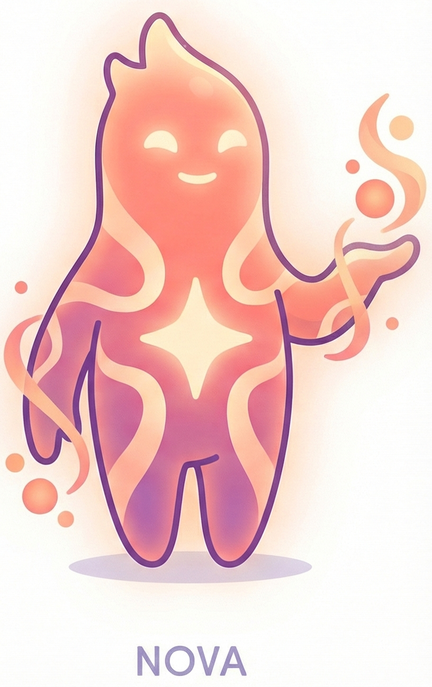
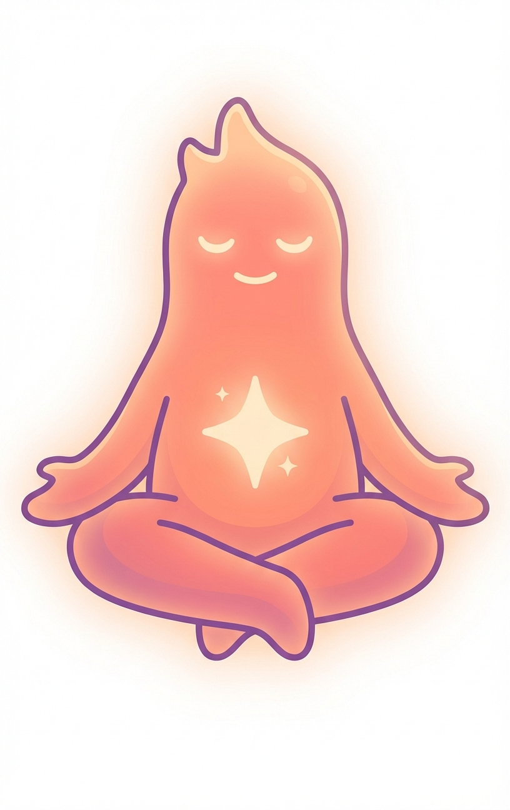
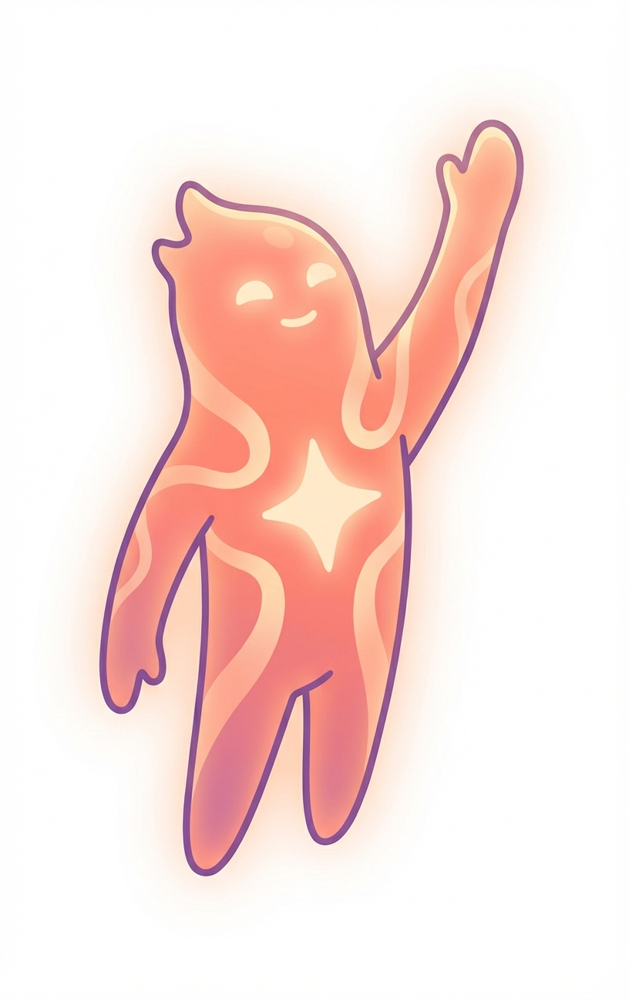
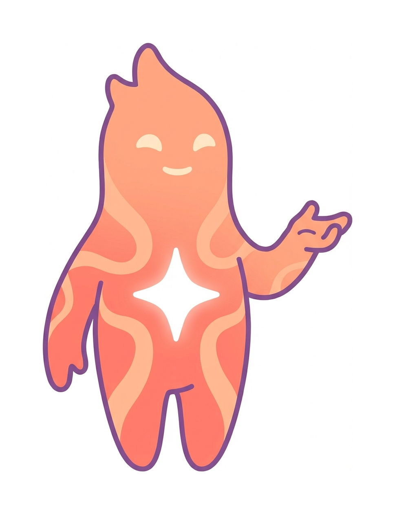
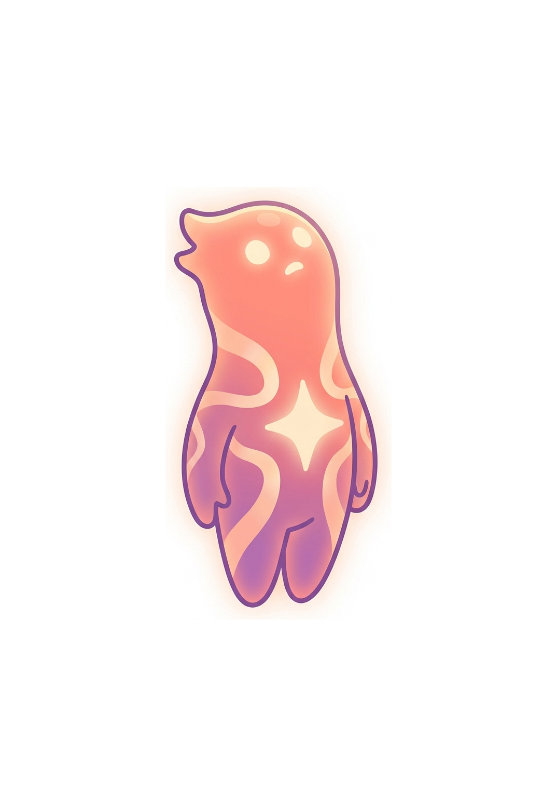

Each character has their original reference pose plus 5-6 AI-generated variations. Review each pose — which ones work, which need iteration, which contexts they fit. Comment in Polylogue.
★ Pip — Explorer
Ages 8–10 · Upper Elementary · The Curious Beginner
Original — Source reference pose. Ethereal coral/peach glow, star on chest, serene.

Creating — Arms extended, energy glowing from hands

Meditating — Floating cross-legged, peaceful glow

Reaching — Arm extended skyward, aspirational

Guiding — Beckoning forward, wise mentor energy

Stargazing — Looking up at the sky, arms open, wonder
📝 How to review: Look at style consistency with the original reference (left card, purple border). Flag any poses where the character drifts too far from the source design. Note which poses would work best for: hero section, tier cards, about page, loading states, error pages, blog illustrations. Comment in Polylogue or tell Shnook directly.